Actividad 11
Objetivo: Instalar Linux Server y configurar 10 usuarios, configurar 4 grupos de usuarios
Ubuntu Server
Ubuntu Server es una variante de Ubuntu que sale con cada versión y está dedicada especialmente para su uso en servidores. El uso de Ubuntu como servidor se ha extendido mucho en los últimos años, sobretodo para el uso de servidores web, de un modo tanto particular como profesional.
Ubuntu Server es un Sistema Operativo sin entorno gráfico (aunque podemos instalarlo) lo que quiere decir que todas las acciones se realizan mediante consola, y normalmente ni si quiera a través de el propio servidor, sino desde una conexión remota. El manejo de Ubuntu Server es muy similar al de cualquier otro Sistema Linux, pero con las particularidades de Ubuntu (como el sudo).
Una vez que tengamos booteada nuestra memoria, la ingresaremos a nuestra computadora y la encenderemos, nos aparecerá una pantalla de carga y después nos cargarán los idiomas, elegiremos el nuestro
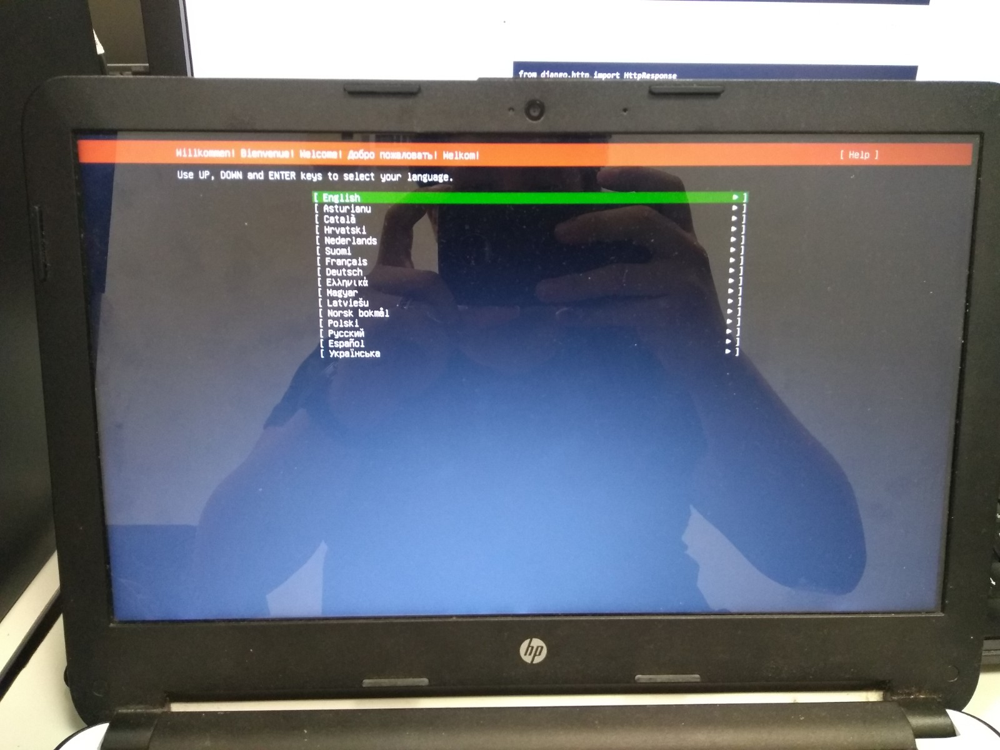Después elegiremos nuestra partición de disco, y después nos preguntará los datos para el sistema operativo, los ingresaremos según nos convenga
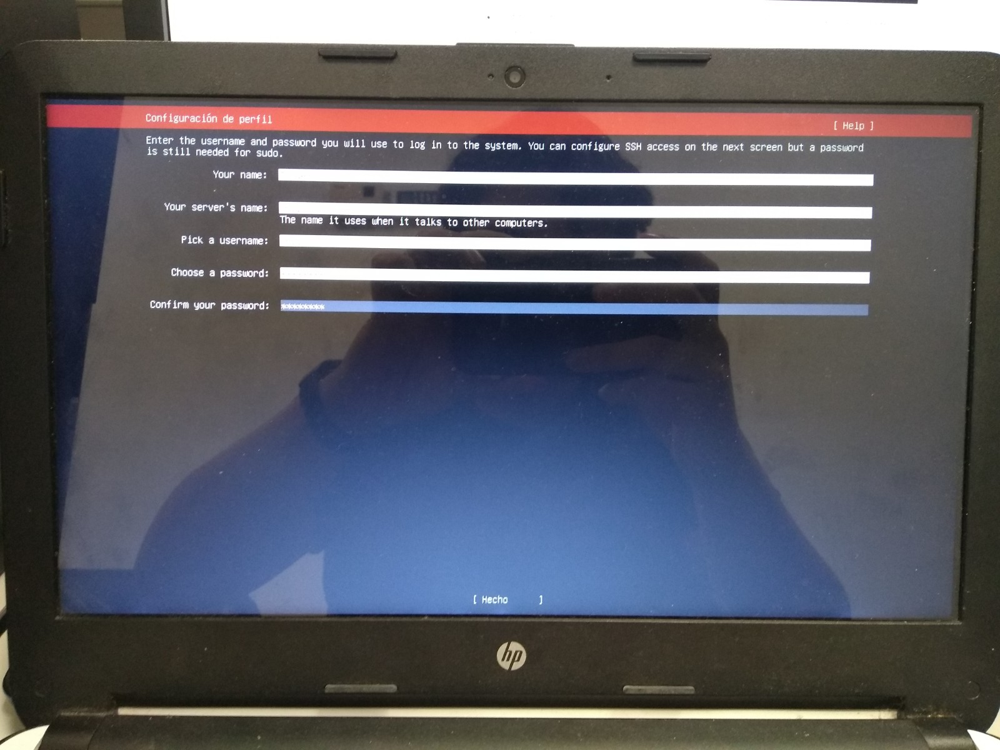Una vez ingresemos los datos, empezarán a instalarse los archivos necesarios para el funcionamiento del sistema operativo, esperaremos a que termine de instalarse
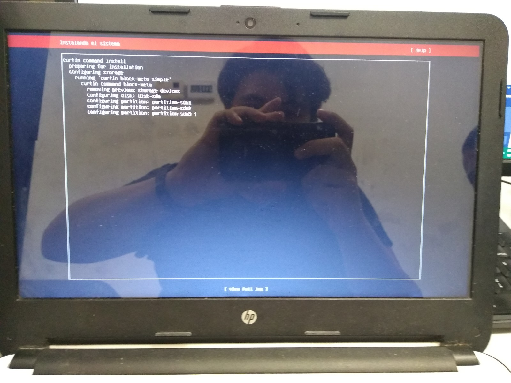Una vez terminado, nos aparecerá un botón abajo donde dirá "Hecho", daremos Enter ahí
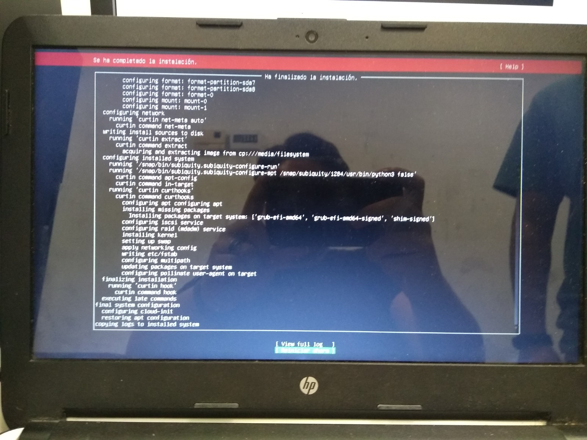Ya que termine de cargar lo necesario, nos pedirá que removamos nuestra unidad booteada y demos ENTER
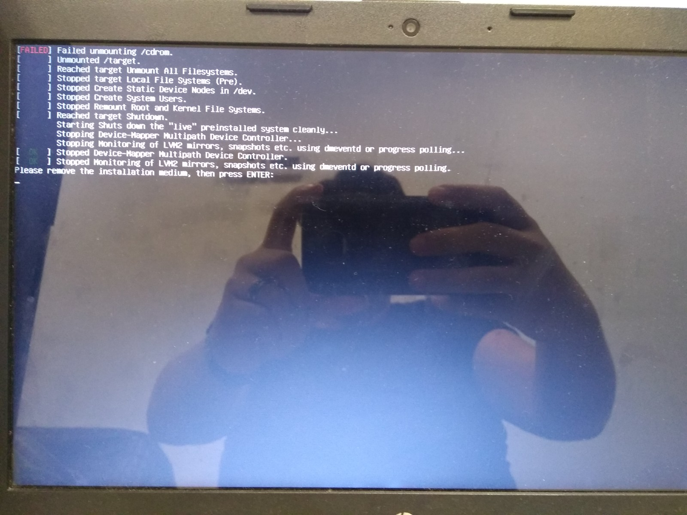Se reiniciará y nos pedirá el usuario y contraseña, los ingresaremos
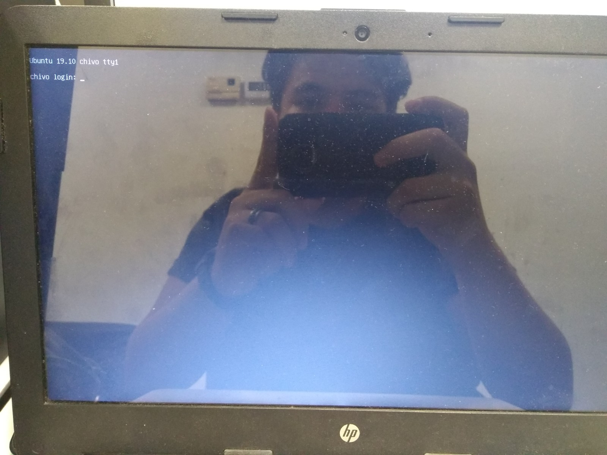Y listo! Ubuntu server se ha instalado correctamente
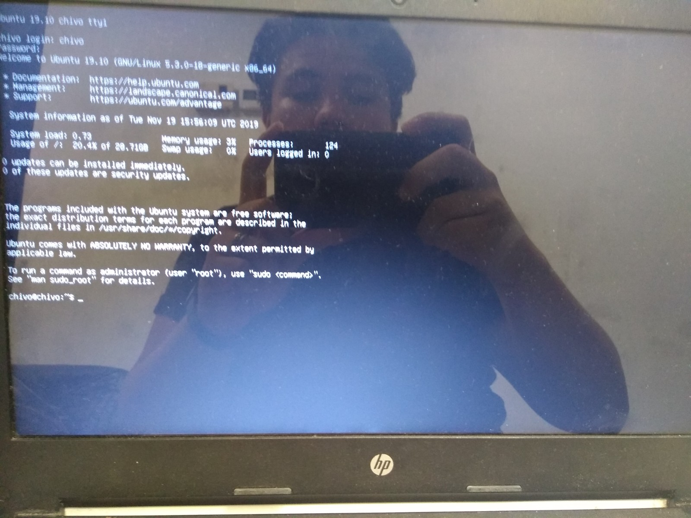Creación de usuarios
Escribiremos el comando "sudo adduser nombre_usuario" donde "nombre_usuario" será el nombre de tu usuario. Le asignarás contraseña, nombre y demás datos necesarios, puedes omitir algunos
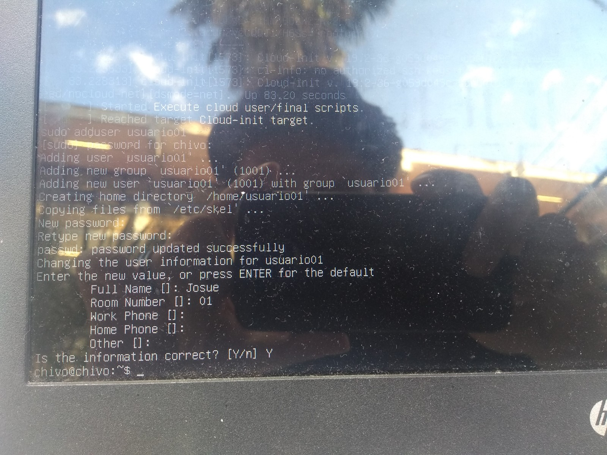Al final haremos 10 usuarios
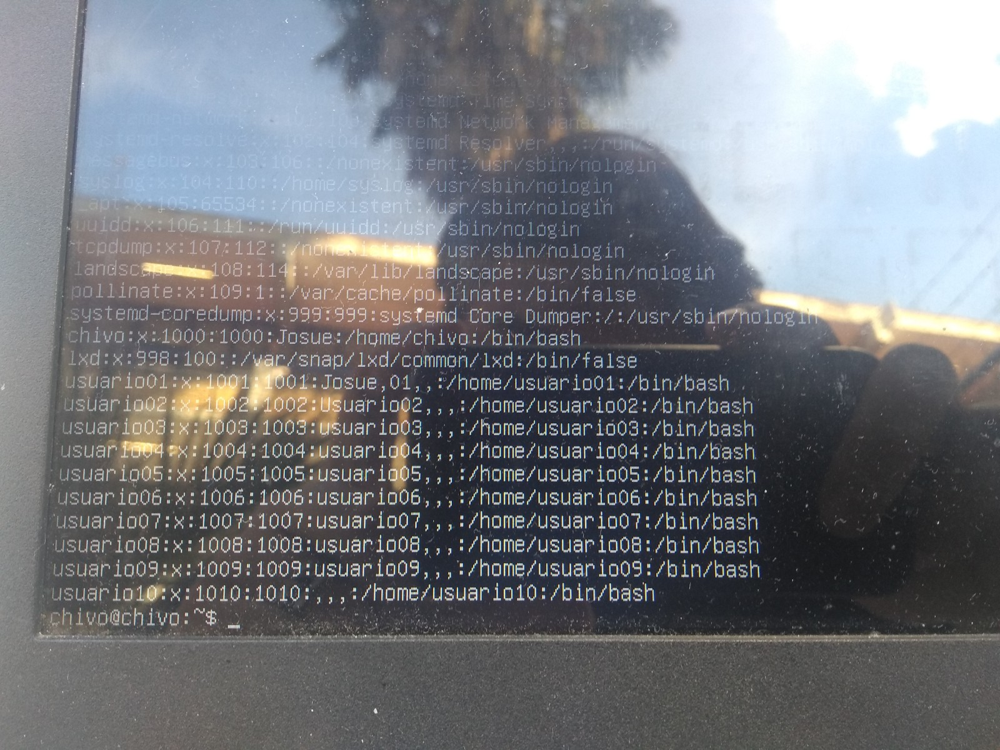Crearemos un grupo con el comando que aparecerpa a continuación
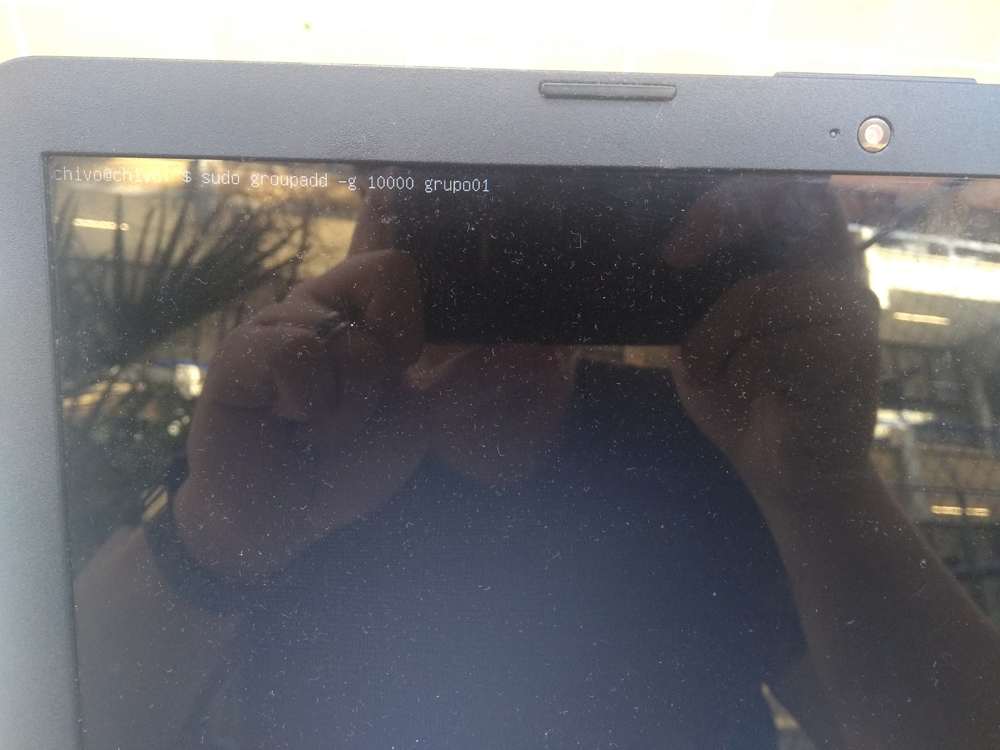Una vez hecho 4 grupos, asignaremos los usuarios que hicimos a cada grupo, se hace con el siguiente comando

Una vez hecho esto para todos los usuarios, nuestros grupos estarán distribuidos de la manera que indicamos
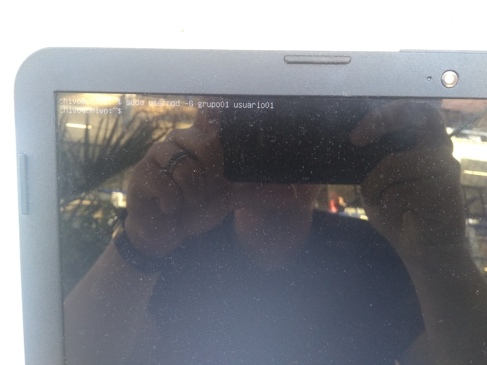